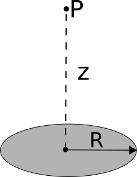

Homework 2 emphasizes the electric field and the principle of superposition that will form the basis of much of your understanding of electrostatics. This homework makes use of what you learned from Secs. 1.1-1.4 in Griffiths and adds to it the concepts from Sec. 2.1, which make up the bulk of the assignment. In addition, we have begun to introduce the idea of finding approximate formulae using Taylor expansions, which is one of the most common practices of theoretical physics. In this assignment, you will use a Jupyter notebook to numerically integrate a charge distribution and to explore the concept of superposition and visualize the field of a charged rod at any point in space, not just where it is more analytically tractable.
Dropbox file request link for Homework 2
When working through some physics, you will typically find yourself in a situation where a strict analytical solution to your problem evades you because the models that you have used have sophisticated algebraic forms that lead to transcendental equations, non-integrable forms, or other problematic situations. In these situations, it is often instructive to step back a moment and consider under what conditions you want to solve your problem. Those conditions might provide you with reasonable limitations and assumptions that lead to approximate forms that get you very close to what you need. In this problem, which has a familiar context from 184, we will give you the assumption to make. But in future problems, you might have to decide for yourself: What assumptions and approximations can I make here and why?
Two charges of identical mass $m$, one with charge $q$ and the other with charge $4q$, hang from strings of length $l$ from a common point. Assume that $q$ is sufficiently small that the electric force on each mass is quite small compared to the gravitational force on each.
Up till now, most of your experience with integration has likely been integrating functions that have anti-derivatives. While this is kind of integration is problematic when you have data that must be integrated (e.g., using measures of position to determine potential energy), we will focus on functions for which there are no anti-derivatives.
Consider a line of charge that lives on the x-axis. It exists from $x=0$ to $x=3$, and distribution of that charge is given by the Gaussian,
In this problem, you will work through this Jupyter notebook to determine the total charge one this line by performing the integral,
You can download the notebook (or view it here). As you work through this problem, you will work through the following activities:
sympy to compute the integral of the function. What does it return? Discuss the function. Is it analytic?scipy.scipy.scipy.integrate built-in quadrature function, quad. Use it to compute the same integral and compare its result to what your code produced. What are the two variables that quad gives you by default?quad and its cousins in the scipy.integrate library do, is different from both of them.In working through the first 3 questions, some scaffolded code has been provided for an analytically integrable function. It can be re-used.
Hint: for the summations that require you to distinguish between even and odd terms, review the range function, which allows you to specify how many steps to take in between each term in a sum.
The concept of superposition is critically important to the study of electrodynamics and, for us, it will be a hugely useful in the arguments we make in electrostatics. Superposition has been called (by Danny, of course) the crux of the biscuit. For this problem, before working out the math in detail, think about how superposition helps you reason through the problem.
For this problem you will need to install the VPython module. Instructions online
Superposition is a very powerful tool that can help quantitatively describe the electric field produced by any arbitrary static distribution of charges. For some problems, it is either incredibly time-consuming to apply superposition analytically to the problem or the problem may not have an analytical solution (i.e., the integral can be constructed but not solved in closed form). In this problem, you will extend your knowledge of superposition to include how we might numerically determine the electric field due to a well-known charge distribution (a rod with a constant linear charge density). By choosing something familiar like a rod of charge, we hope for you to build intuition about the numerical method we are using.
The magnitude of the electric field at a distance $r$ from the midpoint of a uniformly charged rod of length $L$ along an axis perpendicular to the rod is given by:
Suppose you have a vertically oriented rod of total charge $Q=+1\ \mu$C, centered at the origin with a length of 1 m. Determine the electric field at the location $\langle 0.1 , 0 , 0 \rangle$ m? Is your answer a vector? Because it should be.
To numerically compute the electric field at a point in space due to a uniformly charged rod, you must break the rod into small pieces and treat each piece as a point charge. Then, calculate the electric field due to each piece and use superposition to get the net electric field at the given point in space. Break each half of the rod described above into 2 pieces for a total of 4 pieces. Calculate the net electric field at the same location $\langle 0.1 , 0 , 0 \rangle$ m by treating each piece as a point charge. How does this compare with the analytic result in part 1? What is your percent error? What can you do to make the numeric result in this exercise more accurate?
Note what a pain it would be if you broke the rod into 100 pieces and had to calculate electric field by hand! That’s why you prefer to solve it analytically. However, not all charge distributions are easily solved analytically. Furthermore what if the point $P$ was not along an axis of symmetry? That’s why we write computer programs to do the numeric calculation. We created a Jupyter notebook that walks you through how to perform this numerical integral, you can download it here (or view it here). For this part, you are trying to reproduce the value obtained in the previous part, but doing so numerically.
Your answer in the previous part does not match the analytic result in from the very first part because the approximation of each piece of the rod being a point charge at the center of the piece is not accurate for large pieces. To use smaller piece sizes, we must break the rod into a larger number of pieces, $N$. Increase $N$ and run your simulation again. What value of $N$ is sufficient to give a result that agrees within 1% of the analytic result from the first exercise? What about 0.1%? What about 0.0001% - “five sigma” agreement? What does this tell you about making very accurate simulations?
BONUS – You should now have a simulation that will solve for the electric field at any specified location, all you need to do is change the observation location. For this bonus problem, worth up to one part of one problem, alter the code (or write another code) to find the electric field in a circle of a given radius around the line charge.
In this class, you will often produce new formulae that describe some situation for which you might not have developed intuition yet. So, one question you should always be asking yourself is: How do I believe the physics/math that I’ve just done?! In this problem, you will develop some techniques for checking your results against the intuition that you already hold.
Consider a thin disk of radius $R$ with a uniform charge density, $-\sigma$.

A situation: You’ve just spent an hour calculating the magnitude of the electric field of a charged ring of radius $R$ that holds a uniform linear charge density $\lambda$ at a distance $z$ from the center of the ring. You ended up with the result:
$E = \dfrac{1}{4\pi\varepsilon_0}\dfrac{\lambda 2\pi Rz}{(z^2+R^2)^{3/2}}$